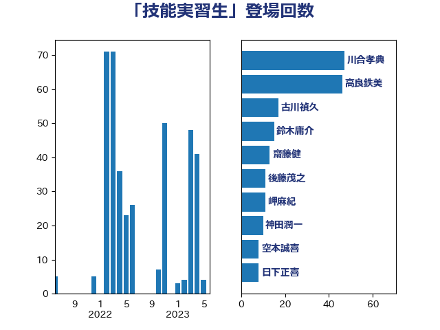

単語「技能実習生」

| 川合孝典 | 国民民主党 | 47 回 |
| 高良鉄美 | 無所属 | 46 回 |
| 古川禎久 | 自由民主党 | 17 回 |
| 鈴木庸介 | 立憲民主党 | 15 回 |
| 齋藤健 | 自由民主党 | 13 回 |
| 後藤茂之 | 自由民主党 | 11 回 |
| 岬麻紀 | 日本維新の会 | 11 回 |
| 神田潤一 | 自由民主党 | 10 回 |
| 空本誠喜 | 日本維新の会 | 8 回 |
| 日下正喜 | 公明党 | 8 回 |
| 青木愛 | 立憲民主党 | 7 回 |
| 遠藤良太 | 日本維新の会 | 6 回 |
| 岸田文雄 | 自由民主党 | 6 回 |
| 高橋光男 | 公明党 | 5 回 |
| 鈴木貴子 | 自由民主党 | 4 回 |
| 牧山ひろえ | 立憲民主党 | 4 回 |
| 阿部弘樹 | 日本維新の会 | 3 回 |
| 野間健 | 立憲民主党 | 3 回 |
| 近藤和也 | 立憲民主党 | 3 回 |
| 足立敏之 | 自由民主党 | 3 回 |
| 谷合正明 | 公明党 | 3 回 |
| 藤川政人 | 自由民主党 | 3 回 |
| 梅村みずほ | 日本維新の会 | 3 回 |
| 柳ヶ瀬裕文 | 日本維新の会 | 3 回 |
| 市村浩一郎 | 日本維新の会 | 3 回 |
| 小沼巧 | 立憲民主党 | 3 回 |
| 加藤勝信 | 自由民主党 | 3 回 |
| 仁木博文 | 無所属 | 3 回 |
| 中川正春 | 立憲民主党 | 3 回 |
| 中川宏昌 | 公明党 | 3 回 |
| 一谷勇一郎 | 日本維新の会 | 3 回 |
| 石井苗子 | 日本維新の会 | 2 回 |
| 田中健 | 国民民主党 | 2 回 |
| 浜地雅一 | 公明党 | 2 回 |
| 山際大志郎 | 自由民主党 | 2 回 |
| 山田勝彦 | 立憲民主党 | 2 回 |
| 城井崇 | 立憲民主党 | 2 回 |
| 古川康 | 自由民主党 | 2 回 |
| 青柳陽一郎 | 立憲民主党 | 1 回 |
| 鈴木馨祐 | 自由民主党 | 1 回 |
| 足立康史 | 日本維新の会 | 1 回 |
| 葉梨康弘 | 自由民主党 | 1 回 |
| 若林洋平 | 自由民主党 | 1 回 |
| 芳賀道也 | 国民民主党 | 1 回 |
| 船橋利実 | 自由民主党 | 1 回 |
| 米山隆一 | 立憲民主党 | 1 回 |
| 篠原孝 | 立憲民主党 | 1 回 |
| 窪田哲也 | 公明党 | 1 回 |
| 福島みずほ | 社会民主党 | 1 回 |
| 田村憲久 | 自由民主党 | 1 回 |
| 田所嘉徳 | 自由民主党 | 1 回 |
| 武井俊輔 | 自由民主党 | 1 回 |
| 櫻井周 | 立憲民主党 | 1 回 |
| 徳永エリ | 立憲民主党 | 1 回 |
| 平沼正二郎 | 自由民主党 | 1 回 |
| 川田龍平 | 立憲民主党 | 1 回 |
| 塩田博昭 | 公明党 | 1 回 |
| 嘉田由紀子 | 無所属 | 1 回 |
| 加藤竜祥 | 自由民主党 | 1 回 |
| 住吉寛紀 | 日本維新の会 | 1 回 |
| 伊佐進一 | 公明党 | 1 回 |
| 中野洋昌 | 公明党 | 1 回 |
| 上田清司 | 国民民主党 | 1 回 |
| あべ俊子 | 自由民主党 | 1 回 |